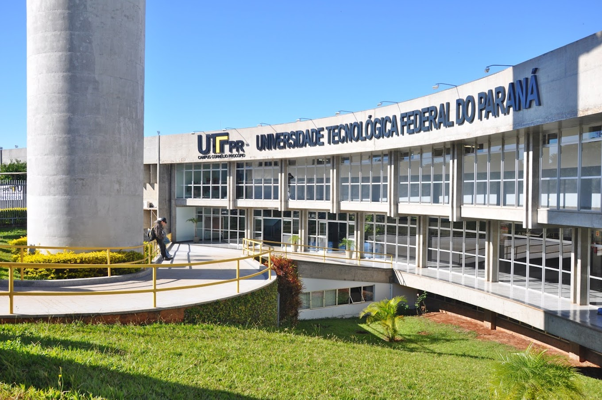

Somos um grupo de estudantes da matéria de Programação Web Front-End da Universidade Tecnológica
Federal do Paraná, campus Cornélio Procópio (UTFPR-CP), do 2º semestre de Análise
e Desenvolvimento
de Sistemas. Temos o objetivo de fornecer um serviço que permita com que
a população paranaense
se informe sobre as doenças endêmicas mais prevalentes do estado, suas formas de contaminação,
tratamentos e meios de prevenção.
Nosso projeto se iniciou com base em um dos 17 Objetivos de Desenvolvimento Sustentável (ODS) estabelecidos pela
Organização das Nações Unidas (ONU). No caso, o ODS 3, que tem por objetivo
garantir uma vida saudável e
promover o bem-estar para todas as pessoas, independentemente da idade.
